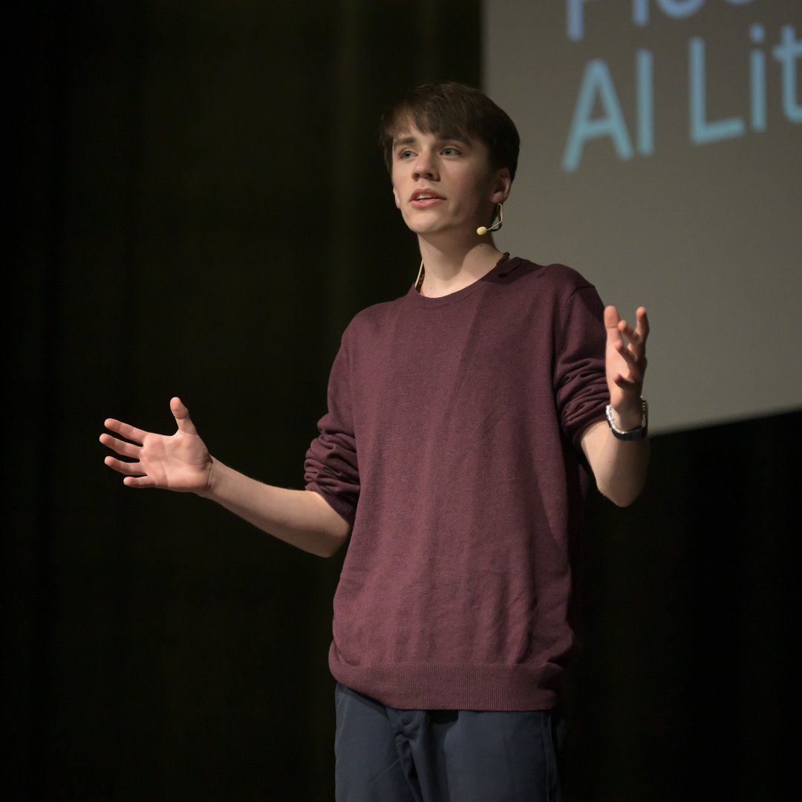
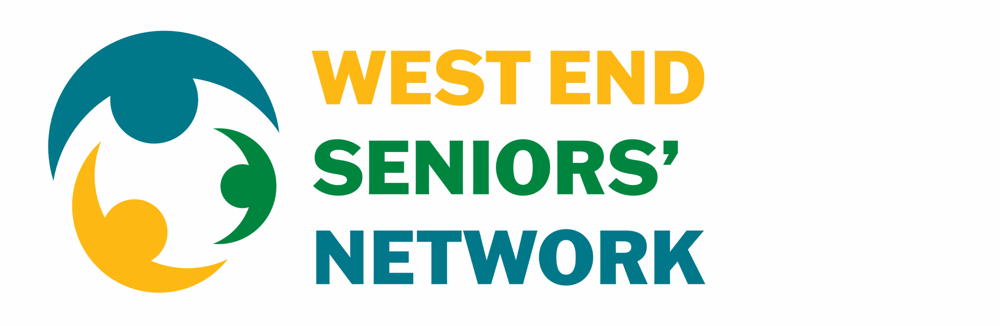
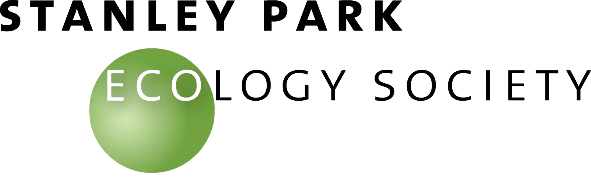
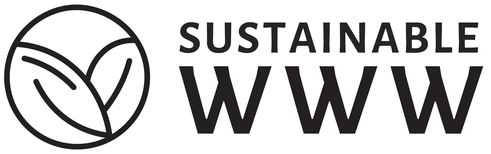

Making the internet sustainable
Oasis of Change is a not-for-profit dedicated to solving the internet's carbon crisis. Through our Web-Ready initiative, we build optimized, low-carbon websites while planting trees and educating others about digital sustainability.
Up to 98% Carbon, Energy, & Water Reduction (so far)
Performance + Planet
Award-Winning Team
16,000+ Trees Planted
32 Countries Impacted
Youth-Founded
Vancouver Based
Not-For-Profit

$870,000+
In-Kind Technology Grants Secured
16,000+
Trees Planted
32
Countries Impacted
Our ecosystem
Explore what we are building at Oasis of Change
From sustainable web development to digital access and emerging innovation, these initiatives reflect how Oasis of Change turns ideas into practical, mission-driven platforms with measurable impact.
Web-Ready is our sustainable web design initiative, helping organizations build faster, lower-carbon, and more accessible websites with measurable environmental impact.
Explore Web-ReadyCase Study
Mittler Senior Technology achieved a 98% reduction in carbon emissions, energy use, and water use.
Between November 2023 and February 2026, mittlerseniortech.com was transformed from an F-rated website that was dirtier than 98% of sites tested into a far more efficient digital experience with measurable environmental results.
Carbon per visit
↓ 98.1%
From 5.31g to 0.10g CO₂
Energy per visit
↓ 98.2%
From 0.0139 to 0.0002 kWh
Water per visit
↓ 98.1%
From 2.95L to 0.06L
Founded by a Pioneer in Digital Sustainability
Gabriel Dalton taught himself to code at 10 years old and founded Oasis of Change to tackle the digital world's carbon problem.
Now one of the few specialists in Canada focused on sustainable web development, his work earned the 2025 Impact in Innovation Award at the City of Vancouver Awards Ceremony.
View Gabriel's biography
Trusted by organizations making a difference
-

-

-

-

Transparency & Impact
2025–2026 Tree Planting Complete
Explore Oasis of Change’s live transparency platform with verified planting data, project locations, partner contributions, and climate outcomes all in one place. See how every tree is counted across our global impact ecosystem.
2025–2026 FY
7,144
trees planted
Total reach
32
countries
All-time total
16,000+
trees planted


Building a more sustainable digital future through energy-efficient websites, transparent impact, and technology that supports communities and the planet.
Subsidiaries / Projects
Company
© 2026 Oasis of Change, Inc. All rights reserved.